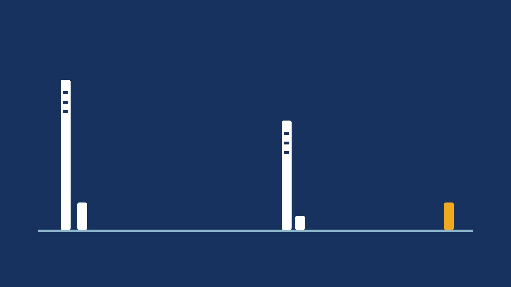
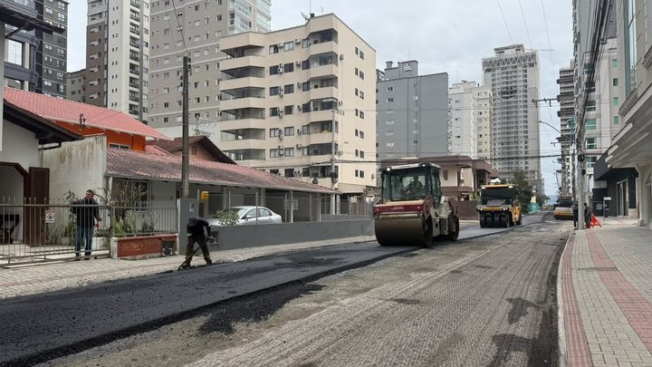

Marginal Oeste do Morretes vai receber asfalto, e a vala que juntava água virou tubulação
A obra que precedeu a mudança de sentido.
O Departamento de Trânsito pôs sentido único no trecho entre a Marginal Oeste e a Rua 436A: a 442 entra no bairro, a 444 volta para a marginal. Fomos ler os avisos anteriores da própria Prefeitura e contamos cinco mudanças permanentes de trânsito no Morretes desde 7 de outubro de 2025, citando 20 ruas ao todo. Três ruas do cronograma de 2025 nunca mais apareceram.
Em 30 segundos · Modo de Leitura, formato original Santa Informa
As Ruas 442 e 444 do Morretes mudaram de sentido.
Agora são de mão única.
Vale no trecho entre a Marginal Oeste e a Rua 436A.
A 442 corre da marginal para a 436A.
A 444 faz o caminho de volta.
Isso é o que chamam de binário.
Uma rua para entrar, a paralela para sair.
O aviso saiu nesta quinta-feira, 8 de outubro.
A sinalização já está instalada.
As duas ruas são estreitas.
Com carro parado dos dois lados, não passava.
A Prefeitura diz que as vagas continuam.
Fomos ler os avisos antigos do Detrami.
Este é o quinto em doze meses no Morretes.
O primeiro foi em 7 de outubro de 2025.
Trazia um cronograma de 11 ruas.
Em 23 de outubro, a fiscalização começou a multar.
Em 6 de maio de 2026 vieram mais oito ruas.
Em 19 de maio, a Rua 440 perdeu a preferência.
Somando os cinco avisos, dá 20 ruas.
Comparamos as listas uma com a outra.
Três ruas de 2025 não voltaram mais.
São a 410, a 430B/460A e a 430C/460B.
A Prefeitura não disse o que houve com elas.
As 442 e 444 não estavam em lista nenhuma.
Nelas, o que veio antes foi obra.
A Rua 444 ganhou asfalto em 23 de junho.
A Marginal Oeste ganhou em 16 de setembro.
O sentido mudou 22 dias depois.
Faltam 54 dias para 1º de dezembro.
InfraestruturaPublicada em Redação Santa Informa

A Prefeitura de Itapema pôs as Ruas 442 e 444, no bairro Morretes, em sentido único no trecho entre a Marginal Oeste e a Rua 436A. O aviso saiu nesta quinta-feira, 8 de outubro, no site da Prefeitura, e diz que a sinalização já está instalada. Fomos ler os avisos anteriores do Departamento de Trânsito, o Detrami: este é o quinto aviso de mudança permanente de trânsito no Morretes desde 7 de outubro de 2025, e os cinco citam 20 ruas do bairro, pela nossa contagem.
A Rua 442 passa a correr da Marginal Oeste para a Rua 436A. A Rua 444 faz o contrário. É o binário: duas paralelas em sentidos opostos, uma para entrar e outra para sair. A Prefeitura diz que as vias são estreitas e que a mão dupla travava com carro estacionado dos dois lados. Com o binário, segundo o aviso, as vagas continuam onde estão.
O primeiro saiu em 7 de outubro de 2025, com cronograma de 11 itens de rua para implantar a partir do dia 13. Em 23 de outubro a Prefeitura voltou para dizer que as Ruas 418 e 420 já valiam e que a fiscalização passaria a autuar, depois de uma semana de orientação. Em 6 de maio de 2026 veio o maior pacote: oito ruas em sentido único, repartidas em dois setores. Em 19 de maio, a Rua 440 perdeu a preferência, que passou para oito ruas paralelas à BR-101. E agora, 142 dias depois, chegaram a 442 e a 444, que desembocam numa dessas preferenciais, a 436A.
Comparamos lista com lista. Das 11 ruas do aviso de outubro de 2025, duas foram confirmadas em vigor naquele mês (418 e 420) e quatro reapareceram em maio de 2026 (412A, 418A, 414 e 416). A Rua 410, a 430B/460A e a 430C/460B não voltaram a aparecer em nenhum aviso de sentido depois daquele dia. A 430B e a 430C reapareceram em maio, mas como preferenciais, que é outro assunto. Das quatro que voltaram, três mudaram de trecho: a 418A, que ia até a marginal, agora para na Rua 440, e o pedaço entre a 440 e a 458 segue em mão dupla. A 414 e a 416 trocaram os pontos de início.
As Ruas 442 e 444 não estavam em nenhuma das listas. O que veio antes nelas foi obra. Em 23 de junho a Rua 444 recebeu asfalto pelo programa Avança Itapema, no trecho entre as Ruas 430A e 430B. Em 16 de setembro a Marginal Oeste recebeu asfalto entre as Ruas 424 e 444, obra que contamos aqui em 3 de setembro, ainda como promessa. A mudança de sentido veio 22 dias depois desse asfalto. A própria Marginal Oeste virou sentido único em 23 de novembro de 2018, por determinação da concessionária da BR-101, faz 2.876 dias.
O resumo de 30 segundos está no topo e a versão completa é o texto acima. Aqui ficam as três leituras da casa sobre o mesmo assunto.
Clara, a otimista
Binário em rua estreita é das soluções mais baratas que existem. Não precisa desapropriar, não precisa alargar, não precisa tirar vaga de ninguém. Precisa de placa e de tinta. Para um bairro que cresceu rápido e tem rua de largura antiga, isso resolve muito com pouco.
E a ordem dos acontecimentos no Morretes faz sentido. Primeiro veio a drenagem, depois o asfalto da Marginal Oeste, agora o sentido das duas ruas que desembocam nela. Quem andou por ali no inverno passado lembra da poeira e do barro. Chegar em outubro com asfalto novo e sinalização instalada, às vésperas da temporada, é adiantar a vida de quem mora no bairro e de quem vai passar por ele em janeiro.
Seu Prudêncio, o criterioso
Merece atenção o destino das três ruas que saíram da lista. A 410, a 430B/460A e a 430C/460B estavam no cronograma de outubro de 2025 com sentido definido e não voltaram a aparecer em aviso nenhum. Pode ser que já tenham sido implantadas sem nota, pode ser que tenham sido adiadas. O morador que leu aquele aviso há um ano não tem como saber qual das duas coisas aconteceu.
Vale acompanhar também a questão do trecho. Três das quatro ruas que voltaram em maio voltaram com extensão diferente da anunciada em 2025. Isso é normal em projeto viário, que se ajusta no campo, mas cada ajuste publicado solto obriga quem dirige ali a juntar quatro avisos de cabeça para saber como está a rua hoje.
Uma sugestão útil, e que não custa quase nada: um mapa único do bairro no site da Prefeitura, com o que já está valendo, o que falta e a data de cada mudança. Dito isso, o encaminhamento tem mérito de sobra. Resolver a drenagem, depois asfaltar e só então mexer no sentido é a ordem que evita quebrar rua nova, e manter as vagas no binário mostra que alguém pensou no comerciante da esquina antes de pintar a seta.
Caco, o sarcástico
Itapema é a cidade onde você pede informação e ouve que é na 430B, que também é a 460A, perto da 436A, não confundir com a 436B.
Reclamação registrada: para entender como está o trânsito do Morretes hoje, o morador precisa de cinco avisos, um ano de arquivo e boa memória para número de três dígitos com letra no fim. O bairro tem mais rua numerada que time de futebol tem jogador.
Mas tá bom, é progresso. Ano passado a conversa era buraco e poeira, hoje a conversa é qual lado da rua pega a seta. Reclamar de sentido de via é reclamação de bairro asfaltado, e isso ali é novidade.
Fontes: o sentido novo das Ruas 442 e 444, as duas pontas do trecho, o motivo da largura reduzida, a manutenção das vagas e a informação de que a sinalização já está instalada estão no aviso Ruas 442 e 444 passam a ter sentido único no bairro Morretes, publicado pela Prefeitura de Itapema em 8 de outubro de 2026 e lido por nós no mesmo dia. O cronograma de 11 itens de rua está no aviso Detrami anuncia mudanças no trânsito em algumas ruas do Bairro Morretes, de 7 de outubro de 2025. A confirmação das Ruas 418 e 420 e o início da autuação estão em Detrami reforça novas regras de trânsito nas Ruas 418 e 420 do Bairro Morretes, de 23 de outubro de 2025. O pacote de oito ruas em dois setores está em Morretes terá mudanças no trânsito a partir do dia 11, de 6 de maio de 2026. As oito vias preferenciais estão em Rua 440 deixará de ser preferencial no Bairro Morretes, de 19 de maio de 2026. A pavimentação da Rua 444 entre as Ruas 430A e 430B está em Rua 444 recebe pavimentação asfáltica no Bairro Morretes, de 23 de junho de 2026. O asfalto da Marginal Oeste entre as Ruas 424 e 444 está em Marginal Oeste recebe asfalto e melhora ligação entre Morretes e Jardim Praiamar, de 16 de setembro de 2026. O sentido único da Marginal Oeste em 2018 está em Marginal Oeste terá sentido único em Itapema, de 23 de novembro de 2018. A contagem dos cinco avisos e das 20 ruas saiu da leitura dessas páginas, somada às buscas por sentido único, binário, preferencial, mão dupla e Detrami no próprio site da Prefeitura, feitas por nós em 8 de outubro de 2026. As diferenças de trecho entre as listas de 2025 e de 2026, os intervalos em dias e as somas são contas nossas. A obra da Marginal Oeste, quando ainda era anúncio, está na nossa matéria Marginal Oeste do Morretes vai receber asfalto, e a vala que juntava água virou tubulação.
A obra que precedeu a mudança de sentido.
Outra frente de pavimentação da cidade.

Itapema · InfraestruturaO mesmo programa, em outro bairro.